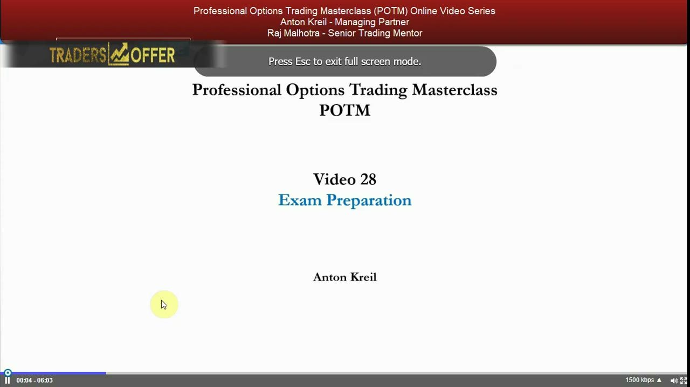

Recap & Exam Preparation
The closing lesson: what the POTM series built, and exactly what the exam and next steps look like.
You've reached the end of the Professional Options Trading Masterclass. This final video recaps the arc of the course, then walks through the two-phase model — education, then implementation — and the exam that sits between them: 100 questions, two hours, no going back.
The gist
- This is the end of the POTM video series — the course took you from where you started to being well educated in options trading, with practical examples throughout.
- The Institute splits everything into two separate parts: EDUCATION (the videos + the exam) and IMPLEMENTATION (doing it with real money) — implementation is a phase you opt into.
- The exam is 100 multiple-choice questions with a two-hour time limit, and once you proceed to the next question you cannot go back to previous ones.
- Grading out of 100: 50 to 59 is a pass, 60 to 69 is a credit, 70 plus is a distinction — the bar is set at 70 to ensure a real qualification process.
- A mark over 50 gives you the RIGHT, but not the obligation, to join the Institute as an Institute trainer on a partner brokerage — the Institute receives zero from the brokers, only access to your data.
- If the retail time challenge (jobs, businesses, opportunity cost of time) makes implementation hard, the 12-week mentoring program is recommended — and because you've done POTM it's an upgrade fee, not a re-purchase.
- Closing message: good luck in your exam.
Course complete: the end of the road
- This video closes the Professional Options Trading Masterclass video series.
- Anton reflects on how far you've come from whatever your starting knowledge was — whether you'd traded options before, not at all, or been educated in them some other way.
- The series deliberately got 'hands dirty and sleeves rolled up' into the nuances of options trading.
- Throughout, the aim was to deliver practical examples so that when you do this for real, you're properly equipped to do it properly.
The final lesson opens as a recap and a congratulations for getting this far. The whole series was built to move you from beginner-or-uneven knowledge to being genuinely well educated in options trading, always anchored in practical, real-world examples.

The arc you just travelled
- The course built a complete options toolkit, video by video, culminating here.
- It moved from the foundations of what makes a trade worth doing through to the directional-volatility strategies (the strap and strip straddle and strangle).
- By this point you're described as 'pretty well educated in options trading' — the education phase is essentially complete.
- The next thing standing between you and implementation is the exam.
You can note the shape of the journey — foundations first, then the directional-volatility strategies toward the end — without over-claiming the details of any single strategy. The point of the recap is simply that the education phase is now finished.
The two-phase model: education, then implementation
- The Institute splits everything into two parts: education and implementation.
- Education is what you're finishing now — the POTM video series, and the exam you're about to take.
- Implementation is 'very straightforward — you're just doing it with real money.'
- The two phases are deliberately separate; implementation is a distinct stage you move into after education, not part of it.
Anton frames the whole model as two clean halves. You've done the learning; implementation is simply putting real money behind it. Keeping them separate means you complete the education and the exam first, then decide about implementing.
Exam logistics
- 100 multiple-choice questions.
- A two-hour time limit — so time each question well.
- No back-navigation: once you press proceed to the next question, you cannot return to previous questions. Don't get stuck; just move on.
- Grading out of 100 — 50 to 59 = PASS, 60 to 69 = CREDIT, 70 plus = DISTINCTION.
- The bar is set at 70 to ensure the Institute has a genuine qualification process.
- Two purposes: (1) for you to test yourself that you've actually learned something; (2) for the Institute to assess whether you're good and knowledgeable enough to join as an Institute trainer.
- A mark over 50 lets you join the Institute community.
- Not stated in this lesson: certificate wording, booking mechanics, any resit policy, and any exam fee.
These numbers are exact and load-bearing. Because you can't go back, pacing matters — a two-hour cap on 100 questions means moving on rather than getting stuck. The exam does double duty: your own self-test, and the Institute's screen for whether you're ready to come in as a trainer.
What passing gives you: a right, not an obligation
- Passing (a mark over 50) gives you the RIGHT, but not the obligation, to join the Institute as an Institute trainer.
- You'd trade on one of the brokerage platforms the Institute has a contract with — and the Institute receives zero from those brokers in return.
- The Institute asks the brokers for only one thing: access to your data, to manage your track record.
- That track record is the basis on which the Institute might potentially fund you as a trader later on — again with no obligation.
- You are completely free to walk away and implement this knowledge anywhere else you want, with no obligation to the Institute.
The exam unlocks an option, not a commitment. To join, you take the exam and open an account with a partner broker so the Institute can access your data and manage your track record — potentially leading to funding down the line. But you owe nothing and can take the knowledge elsewhere.
The retail time challenge and mentoring
- A recurring course theme: retail traders face a time challenge — most have full-time or part-time jobs, or run businesses (time and the opportunity cost of time).
- If you're struggling with implementation, or expect to because of that time challenge, seriously consider a mentoring program.
- The 12-week mentoring program has you implement with real money alongside a mentor over a 12-week period.
- Many mentors are current or former professional traders, a lot of them with multiple decades of options experience — 'on your shoulder' to force you to become better.
- Because you've already done POTM, the mentoring is an UPGRADE fee: it includes POTM plus the other video series and a year's data subscription — you don't re-pay for POTM.
- See the mentors on the mentoring page: itpm.com/trader-mentoring.
Time is the retail trader's real constraint, and it's been a thread all through the course. If that's you, the 12-week mentoring program pairs you with an experienced pro while you trade real money. It's priced as an upgrade — you don't pay for POTM twice.
Closing
- Congratulations for getting this far.
- 'Good luck in your exam.'
- The hope: to see you on the other side at the Institute as an Institute trader.
The series signs off with a straightforward send-off into the exam and, for those who choose it, into implementation at the Institute.
Glossary
- Education phaseThe first of the Institute's two phases — the POTM video series plus the exam. What you complete before implementing with real money.
- Implementation phaseThe second phase — 'very straightforward: you're just doing it with real money.' A separate stage you opt into after education.
- Pass / Credit / DistinctionThe exam's grading bands out of 100: 50–59 is a pass, 60–69 is a credit, 70+ is a distinction. The bar is set at 70 to ensure a real qualification process.
- Institute trainerThe status you earn the RIGHT (not obligation) to take up with a mark over 50 — trading on a partner brokerage while the Institute manages your track record via your data.
- Track recordThe performance data the Institute manages via broker access; the basis on which it may potentially fund you as a trader later.
- Opportunity cost of timeA recurring course theme — the value of the time retail traders (who mostly have jobs or businesses) give up to trade, which drives the case for mentoring.
- Mentoring upgrade feeBecause you've done POTM, the 12-week mentoring program is priced as an upgrade that bundles POTM, the other video series, and a year's data subscription — you don't re-pay for POTM.